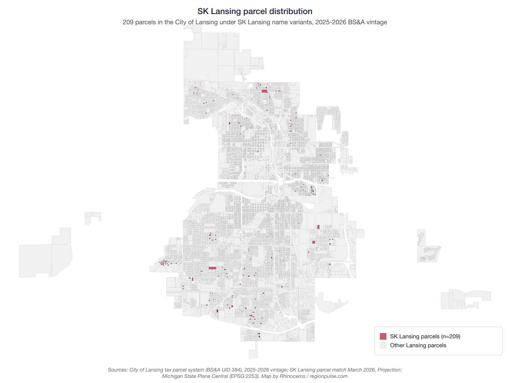

From Public Housing to Wall Street Mortgages: The Lansing Scattered-Site Sale
LANSING, Mich. — In April 2023, the Lansing Housing Commission completed the sale of 202 scattered-site public-housing homes to a Michigan limited liability company that had been formed thirteen months earlier. The buyer's original name on the LARA filing was SK Investments Group LLC. Eight months later, the same entity filed an amendment changing its name to Red Michigan Holdings LLC, dropping the parent brand from public records while the sale was under public scrutiny. The total consideration recorded with the Ingham County Register of Deeds across four phases of closings was $14,620,000.
The homes had been built with federal funds in 1968 to 1971 as part of LHC's public-housing inventory. LHC itself had been created in 1964 specifically to house families displaced by the construction of Interstate 496, which demolished approximately 890 homes in Lansing's largest Black neighborhood (CEDAM, “Redlining, I-496 and Lansing's African-American Community,” 2019) and displaced approximately 6,749 people (Fox 47, “The Legacy of Interstate 496”). The scattered-site portfolio is geographically distinct from the I-496 displacement neighborhood: per the City of Lansing tax-parcel system, only about 6 percent of SK Lansing's 209 parcels (15 of 242 matched parcels) sit in the historical-displacement ZIPs 48915 and 48933, with the remainder distributed across south, north, and east Lansing residential neighborhoods. Fifty-five years after the federal government built the public-housing portfolio that included these homes, LHC sold the scattered-site portion to a private buyer at the end of a cross-held Florida corporate chain. Within nine months of closing, the buyer's loans were assigned through Goldman Sachs Mortgage Company to U.S. Bank Trust National Association as trustee of Legacy Mortgage Asset Trust 2024 INV1, a mortgage-backed security. Within fifteen months, the new owner began filing evictions against tenants in the homes. Twenty-nine eviction cases are on the 54A District Court docket as of February 2026.
SK Lansing holds 209 parcels in the City of Lansing under seven SK name variants on the 2025-2026 BS&A assessment rolls, the largest private residential portfolio in the city. The Ingham County Land Bank holds more city parcels in aggregate (472), but that inventory is predominantly vacant lots from demolitions rather than occupied housing.
The homes
The Lansing Housing Commission was created in 1964 specifically to house families displaced by I-496 construction, authorized under the Michigan Housing Facilities Act, Act 18 of 1933 (MCL 125.651 et seq.). After building three concentrated developments (LaRoy Froh Townhouses, Hildebrandt Park, Forest Arbor), LHC shifted at HUD's urging to scattered-site construction designed, per City Pulse's 2020 reporting, “to be similar in appearance to other homes in the neighborhood to somewhat mask the financial stature of tenants.” The scattered-site approach distributes individual homes across residential neighborhoods rather than clustering them; the 209 parcels that became the SK Lansing portfolio sit predominantly in south Lansing (about 45 percent in ZIP 48911) with secondary concentrations in north Lansing (17 percent in 48906), east Lansing (17 percent in 48912), and south-central Lansing (14 percent in 48910).

The scattered-site portfolio was built in two phases. HUD's Public Housing Buildings dataset (MI058) records Project 8 Scattered Sites at Date of Full Availability October 30, 1969, and Project 5 Scattered Sites at DOFA November 29, 1970. The City of Lansing's Consolidated Plan 2022-2026 (filed with HUD in August 2022) acknowledges 254 scattered sites in the public-housing inventory at the time of filing, with “approximately 220 scattered sites” identified for disposition under HUD's Section 18 Disposition program (24 CFR Part 970).
The Consolidated Plan, in the same document that approved the disposition, also noted: “A shortage of affordable housing may exist for very low-income households earning less than 30% HAMFI.”
The HUD Picture of Subsidized Households dataset (PHA-level data for MI058) records LHC's public-housing unit count as 833 in 2020, 406 in 2021, 68 in 2024, and 66 in 2025. The 833-to-66 decline (a loss of 92 percent of the public-housing inventory in five years) is the cumulative result of the 2021 Rental Assistance Demonstration conversions and the 2023 to 2025 scattered-site sale to SK Lansing.
| Year | Units | Change | Cause |
|---|---|---|---|
| 2020 | 833 | Baseline (pre-RAD, pre-sale) | |
| 2021 | 406 | −427 | Rental Assistance Demonstration conversions begin |
| 2024 | 68 | −338 | Scattered-site sale closings (April 2023, January 2024) |
| 2025 | 66 | −2 | Final closing (February 2025); 10 resident-purchase exits 2023–2024 |
| Source: HUD Picture of Subsidized Households, PHA MI058, public-housing sub-program. Resident-purchase exits documented in LHC board minutes (CivicClerk event 9440, October 2024). | |||
The current tenant population in the LHC project-based-voucher portfolio (253 units, the segment that includes the SK Lansing parcels) is 88 percent female-headed households, 64 percent Black, and 76 percent at or below 30 percent of area median income, per HUD Picture of Subsidized Households, PHA MI058, project-based voucher sub-program, 2025. The figures describe the current LHC PBV tenant population in the aggregate; LHC has not published tenant-characteristic data restricted to the former scattered-site homes specifically.
The buyer
The Michigan acquisition entity was organized on March 24, 2022 by Tzvi Koslowe of 23075 Laurel Valley Street, Southfield, Michigan, under the name SK Investments Group LLC (LARA filing 802830624). The same entity, on November 21, 2022, filed an amendment changing its name to Red Michigan Holdings LLC. A second Koslowe entity, SK Lansing LDHA LLC (LARA 802867162), was formed on June 1, 2022 as a limited dividend housing association, the structure that holds title to the properties on the assessment rolls and is eligible for a payment-in-lieu-of-taxes (PILOT) arrangement under Michigan PILOT statutes.
The SK brand sits at the end of a cross-held Florida ownership structure recorded in Florida SunBiz filings. Amnon Zakay (Sunrise, FL) is a member of Yard Holdings LLC (FL Doc L09000097707, EIN 27-1115979). Yard Holdings is a member of Figtree Holdings LLC (FL Doc L09000086632, EIN 27-0896898), which is managed by Yanir Hadan (Sunrise, FL). Figtree Holdings, in turn, is the manager of Yard Holdings. The cross-held structure (Zakay owns Yard, Yard owns Figtree, Figtree manages Yard) separates equity from operational control. Koslowe does not appear on any Florida filing in the chain. The connection between the Florida parent and the Michigan acquisition entity is established by the original entity name (SK Investments Group), the brand listing on the SK Investments Group website, and Koslowe's continued operation under the SK name.
SK's Lansing-side counsel for the LHC transaction was Thomas L. Lapka, of 605 South Capitol Avenue, Lansing. Lapka is also chair of the Capital Area Housing Partnership board, registered agent for at least 22 Limited Dividend Housing Association partnerships, and registered agent for Watermark Management, the prior employer of LHC executive director Doug Fleming. The same attorney who represented SK on the buy side of the LHC sale also serves as a board chair of a Lansing-area affordable-housing nonprofit, holds the registered-agent role across a portfolio of LDHA structures, and previously held an agent role for the entity Fleming worked at before joining LHC.
The Lansing Housing Commission's broader institutional history (board composition beyond the named commissioners, the full vendor and contractor network, audit trajectory, and dispositions outside the scattered-site portfolio) is outside the scope of this piece, which documents the SK Lansing transaction specifically.
Two earlier Koslowe entities establish the operating history. SK Holding Group LLC (LARA 802113132), formed August 29, 2017, is Koslowe's earliest Michigan entity under the SK brand. SK Affordable Housing Company (LARA 802464667), incorporated June 18, 2020 by attorney William Freeman of Lumberg Freeman Gleeson Hicks & Koppelman PLLC, is a Michigan domestic nonprofit with the stated purpose “to acquire and develop affordable housing under the applicable statutes.” The nonprofit's mailing address is the same Southfield home address as Koslowe's. As of February 25, 2026, no IRS Form 990 had been filed by SK Affordable Housing Company on either ProPublica's Nonprofit Explorer or GuideStar.
Koslowe is identified as an Israeli CPA and a former controller at Africa Israel Investments by the company's own self-description on the SK Investments Group website; that same site states the company manages 500 to 600 homes in the Detroit region. Koslowe has zero state or federal political contributions on file with the Michigan Bureau of Elections or OpenSecrets.
The sale and the mortgages
The sale was a HUD Section 18 disposition, not a county-auction event. The Lansing Housing Commission is a separate legal entity from the City of Lansing, a public-housing authority created under the Michigan Housing Facilities Act with its own board, budget, and staff, and it owned the homes outright. The properties were never tax-delinquent; the Ingham County Treasurer had no claim. Federally-funded public housing cannot be sold through county tax-foreclosure auction; the only legal route is HUD Section 18 disposition under 24 CFR Part 970, which requires HUD approval. The LHC board approved the disposition; HUD approved the disposition; the Lansing City Council was notified of the sale (Fleming testified before the Committee of the Whole on February 13, 2023) but did not vote on it.
The Ingham County Register of Deeds records the sale in four phases: two recordings on April 5, 2023 totaling $11,920,000, a third recording of $2,310,000 on January 10, 2024, and a fourth recording on February 4, 2025 of $390,000 spread across five separate parcel transfers, for an aggregate consideration of $14,620,000. SK's December 2021 written proposal to LHC, posted to Scribd as document 586583859, offered $17,700,000 for 242 units, meaning the actual sale price recorded with the Register of Deeds was 17 percent below that proposal.
Between April 10 and April 25, 2023, immediately following the first closing, SK Lansing LDHA LLC recorded twenty mortgages with the Ingham County Register of Deeds totaling at least $8,727,000. The mortgagee on every recording is Civic Financial Services LLC, a private real-estate-investment lender. Within months, those Civic Financial mortgages were assigned to Goldman Sachs Mortgage Company, and from Goldman Sachs to U.S. Bank Trust National Association as trustee for Legacy Mortgage Asset Trust 2024 INV1, a structured mortgage-backed security.
The HUD Picture of Subsidized Households dataset records 253 project-based vouchers in LHC's 2025 inventory, governed by a 20-year affordability covenant attached to the HUD Section 18 disposition that runs through approximately 2042. SK Lansing's 209 parcels at the average HUD Fair Market Rent payment rate (approximately $879 per month per unit at the FY2025 voucher level) generate roughly $2,200,000 per year in federal subsidy, which against the $14,620,000 purchase price implies a simple federal-subsidy payback of approximately four-and-a-half years before counting tenant rent share, sale of individual parcels, or financing leverage.
Under HUD Section 18 disposition rules (24 CFR Part 970), an owner who acquires former public-housing units must operate them as project-based-voucher housing for at least 20 years following the disposition. During that period, rents are set by the project-based-voucher Housing Assistance Payment contract (rents at or below HUD Fair Market Rent), the units must be offered to PBV-eligible tenants (incomes typically at or below 50 percent of area median income), and the owner cannot demolish the units, convert them to market rate, or sell them to a buyer who would not accept the PBV obligation. After the 20-year period, the affordability obligation lapses unless separately renewed; the owner retains title to the parcels and may convert them to market rate, sell at market value, or take any other use permitted by zoning.
What has happened since
The 54A District Court eviction docket, retrieved from MiCOURT on March 13, 2026, lists 29 eviction cases filed by SK Lansing entities against tenants between June 2025 and February 2026. Two filing dates account for most of the cases: 14 cases were filed on a single day, January 29, 2026, and 5 cases were filed on a single day, September 5, 2025. Of the 29 total cases, 12 were open as of the retrieval date and the remaining 17 had closed dispositions.
| Filing date | Cases filed | Pattern |
|---|---|---|
| 2025-06-18 | 2 | |
| 2025-07-09 | 1 | |
| 2025-07-29 | 1 | |
| 2025-08-11 | 1 | |
| 2025-09-02 | 1 | |
| 2025-09-05 | 5 | Single-day batch |
| 2025-09-22 | 1 | |
| 2025-11-12 | 2 | |
| 2026-01-29 | 14 | Single-day batch |
| 2026-02-12 | 1 | |
| Total | 29 | 12 open / 17 closed at retrieval |
| Source: Michigan state court case index (MiCOURT), 54A District Court (Lansing), retrieved March 13, 2026. | ||
Under 24 CFR 983.261, a tenant whose unit is under a project-based voucher contract has the right to receive a tenant-based Housing Choice Voucher after 12 months of occupancy, usable to rent elsewhere. That right depends on the issuing public-housing authority having tenant-based vouchers available. LHC's November 2024 board minutes (CivicClerk event 9442) record that LHC's Housing Choice Voucher program was frozen and the waitlist had been closed since July 2024. SK Lansing's tenants' statutory right to port to another unit is, during the current voucher-supply conditions at LHC, inoperative.
In Pontiac, where SK Pontiac Assets Delaware LLC (LARA 803019905) and SK Pontiac Assets LLC (LARA 802156315) hold rental property, the 50th District Court records show 28 ordinance-violation cases filed by the City of Pontiac against SK Pontiac entities, 26 of them on a single day (April 23, 2025). All 28 are closed. In Lansing, no comparable code-enforcement docket against SK Lansing has been identified to date. The two cities operate under the same Michigan municipal-enforcement statutes but produce opposite court records: in Pontiac, the city sues the landlord; in Lansing, the landlord sues the tenants. The two patterns place the cost of disputes on different parties. Ordinance-enforcement cases by a city against a landlord put the burden of court appearances, fines, and remediation on the landlord. Eviction cases by a landlord against tenants put the burden of court appearances, attorney's fees if any, default judgments if not, and forced relocation on the tenants, who in Lansing's case face an LHC tenant-based-voucher waitlist that has been closed since July 2024.
SK's own property-tax record on the LHC parcels was not clean. The Ingham County Register of Deeds recorded three Notices of Forfeiture against SK Lansing parcels on March 28, 2025 ($156, $310, and $1,562 respectively, for unpaid 2024 property taxes). SK redeemed all three forfeitures on December 16, 2025, paying $555, $733, and $2,197 with statutory penalties. The pattern of forfeiture-then-redemption resolves before the parcels enter the 2025 Ingham County foreclosure-risk list, so SK appears at zero parcels on that list rather than at three.
SK's expanded Lansing footprint extends beyond the LHC sale. Rivershell Lansing LLC (LARA 803120848), formed October 31, 2023 with Koslowe as resident agent, holds title to Rivershell Apartments at 3501 Bayview Drive: thirteen buildings, 136 units (92 two-bedroom and 44 one-bedroom), 134,416 square feet. The SK Investments Group website describes the property as “renovated and stabilized in 2024” and “fully operational and generating consistent cash flow.” SK's combined Lansing residential footprint is at least 338 units across the scattered-site portfolio and Rivershell.
Eviction economics under the covenant
One question the pattern raises is what economic incentive an owner has to evict tenants from project-based-voucher units during a 20-year affordability covenant. The first-order rent answer is: none. PBV units are rent-capped at HUD Fair Market Rent under the Housing Assistance Payment contract, an evicted tenant must be replaced with another PBV-eligible tenant at the same rent, and the covenant forbids conversion to market rate until 2042, so eviction during the covenant period does not raise the unit's rent above what was already being collected.
The second-order incentives are different. Eviction lets an owner select among PBV-eligible applicants and remove tenants associated with maintenance complaints, fair-housing complaints, or arrears, replacing them with a quieter book at the same rent. Eviction shortens tenant tenure now, which reduces the friction of displacement at the 2042 covenant cliff: long-tenured tenants are harder to displace than newer ones under both state law and ordinary political dynamics, so resetting the lease clock during the covenant lowers the expected cost of conversion to market rate after the covenant expires. Eviction creates vacancy, and vacant parcels are more saleable than occupied ones to a buyer who would accept the PBV obligation under 24 CFR Part 970, expanding the universe of buyers a current owner can address. Vacant collateral also affects loan-to-value modeling on a refinance of the underlying $8,727,000 mortgage debt.
Whether unit removal from the PBV contract under 24 CFR Part 983 is reachable through an eviction-then-vacancy pathway depends on PHA discretion and lease-specific terms; the available record does not close that question. The fourteen single-day filings on January 29, 2026 are not fourteen independent landlord-tenant disputes but a single portfolio-level decision applied across a tranche of units. The decisions that produce a fourteen-case batch on one day include clearing arrears across a class, resetting lease terms ahead of a refinance or sale, or preparing a tranche for transfer.
What is on the public record
The earliest public objection to the LHC sale on file is an April 26, 2022 email from Lansing resident Kyle Richard to all City Council members and the Mayor, archived in three CivicClerk meeting files (events 4795, 5766, and 4738):
“the Lansing Housing Commission is planning to sell over 250 homes currently held as public housing to a private investing firm out of Miami, Florida... public housing is a public good and if we are not getting enough money from the feds to support our stock selling them to someone in Miami is not the answer, in fact it is equivalent to throwing residents of Lansing to the dogs. If there is anything you can do to stop this sale please do so, there are non-profits in Lansing willing to take on and restore the homes who have been ignored outright by LHC.”
No Council member response is recorded in any of the three CivicClerk packets that archive the Richard email. A search of the CivicClerk packets reviewed for this report (the three Richard-archive packets, the LHC FY2020 through FY2022 audits, the LHC March and April 2023 board minutes, and the Committee of the Whole and Committee on Development and Planning packets cited below) returned no formal position registered by any Lansing or statewide fair-housing, civil-rights, legal-services, or tenant-advocacy organization in the disposition record. The April 2022 Richard email is the only resident-authored objection located in those packets. The nonprofits Richard referenced in the email (“there are non-profits in Lansing willing to take on and restore the homes who have been ignored outright by LHC”) are not named elsewhere in the same record.
LHC's own stated rationale for the disposition is in its May 2020 Annual Plan presentation (Resolution 1318, 2020-2021 Annual Plan, May 27, 2020 board packet, lanshc.org). The slide listing the benefits of the Section 18 disposition of the scattered-site portfolio gives four reasons in LHC's own words:
- Capital influx
- Redirect capital to higher value activities
- Elimination of ineffective segments of portfolio
- Reduction of city violations and resident complaints tied to LHC
The fourth bullet is a documented institutional-liability transfer: LHC told its own board in 2020 that one benefit of the disposition was to reduce LHC's exposure to city code violations and resident complaints. The institutional-violation exposure that LHC sought to escape by selling has materialized in another Michigan city as ordinance-enforcement action against the buyer (28 cases against SK Pontiac entities, 26 of them on a single day, April 23, 2025), but not so far in Lansing.
LHC's executive director later confirmed the “capital influx” element in greater detail. At the November 15, 2023 Committee on Development and Planning meeting (CivicClerk event 12874), Fleming told Council members that “the strategic plan has them selling the scattered houses. With those sale funds those are being reinvested into these new phase 1 developments.” The “new phase 1 developments” refer to LHC-sponsored Limited Dividend Housing Association partnerships financed through Low-Income Housing Tax Credits syndicated by Cinnaire, where LHC commissioner Ashlee Barker is Vice President. Cinnaire's title-services arm also held the $200,000 earnest-money deposit on the SK acquisition (per the December 2021 SK proposal). The LHC commissioner's employer thus had a documented commercial role in both the sale closing and the post-sale reinvestment of proceeds. The general-partner entities for the LIHTC partnerships receiving the reinvested proceeds are organized and agented by Fleming personally, in arrangements that fall outside the scope of this transaction-specific piece. The Consolidated Plan that approved the disposition, in the same document, stated: “A shortage of affordable housing may exist for very low-income households earning less than 30% HAMFI.” The 2025 HUD unit count for LHC is 66, a reduction of 767 units from the 2020 figure.
On February 13, 2023, LHC Director Doug Fleming appeared before the Committee of the Whole (CivicClerk event 8309) and confirmed that the scattered-site sale “has not closed yet but should close in the next couple weeks.” Fleming reported a six-month management arrangement, identified the management contractor as Michigan Asset Management Group (likely LARA 801534229, Michigan Asset Group LLC, organized by Evert Kramer of DeWitt, MI), and stated that “they have spent $500,000 over last 6 months” on maintenance of the units about to be sold. The Committee of the Whole did not vote on the sale; LHC's board had already approved disposition under HUD Section 18.
City Pulse reported in 2020 (“Public Housing or Profiteering?”) that of approximately 375 entities invited to bid, only two submitted formal bids for the scattered-site portfolio, and only 8 of approximately 40 interested tenants could qualify under LHC's terms to purchase their own homes. Council member Adam Hussain, in the same reporting, described as “perplexing” Fleming's proposal that LHC would continue managing the properties post-sale.
The available record does not show LHC publicly evaluating non-disposition alternatives before approving the Section 18 sale. Two are ordinarily considered when public-housing units face capital-needs pressure: the Rental Assistance Demonstration program, which converts public housing to long-term project-based or tenant-based vouchers without transferring ownership, and structured sale to a mission-aligned nonprofit owner with a long-term affordability covenant. LHC did pursue Rental Assistance Demonstration conversions for a portion of its inventory in 2021 (the move that took the public-housing unit count from 833 to 406 between 2020 and 2021), but those conversions did not extend to the scattered-site portfolio. No public document in the disposition record evaluates a nonprofit-owner alternative for the scattered-site homes.
The 2025-2026 Glenburne Subdivision assessment rolls (CivicClerk events 27429 and 26314) record the current owner of the former LHC properties as “SK LANSING LMTD DIV HOUSING ASSOC” at 23075 Laurel Valley Street, Southfield. Earlier rolls show the same parcels owned by “HOUSING” at 419 Cherry Street, the LHC address.
What this means
The 833-to-66 reduction in LHC's public-housing inventory means 767 fewer households now have access to traditional public housing in Lansing than did in 2020. The Project Based Voucher contracts attached to the SK Lansing parcels preserve federal subsidy for those specific units, but the project-based voucher attaches to the unit, not to the tenant: a tenant who is evicted from a SK Lansing parcel does not retain the voucher when leaving the unit.
Under 24 CFR 983.261, project-based voucher tenants gain a statutory right after twelve months of occupancy to convert to a tenant-based voucher portable to housing of their choice. That right is currently inoperative for SK Lansing tenants because LHC's tenant-based voucher waitlist has been closed since July 2024 and the program was frozen in November 2024 (CivicClerk event 9442).
The 20-year affordability covenant attached to the HUD Section 18 disposition runs through approximately 2042. After 2042, no current statutory or contractual instrument constrains what the parcels' owner does with them.
The post-sale public record on tenant outcomes is thin. No public LHC document, City of Lansing document, or HUD document available through CivicClerk, the Lansing Open Data portal, or HUD's portfolio data products provides post-sale unit-condition data, tenant-satisfaction surveys, code-enforcement summaries, or other observables for the SK Lansing parcels. The 29 eviction filings in the 54A District Court are the densest publicly available record of post-sale tenant experience, and they describe departures rather than ongoing conditions. Whether the 209 units are being maintained at the standard required by the project-based-voucher contracts, whether tenants who remain in occupancy are receiving timely repairs, and whether the 20-year affordability covenant is being monitored or enforced are open questions the available record does not answer.
During the covenant period, the federal subsidy attached to these parcels continues to flow. At the FY2025 voucher rate ($879 per unit per month) across 209 PBV-attached parcels, the projected federal subsidy stream is approximately $2,200,000 per year, or about $44,000,000 across the full 20-year covenant if the program and rates hold. That subsidy flows to SK Lansing LDHA as the property owner. From there, it pays off the private parties holding stakes in the parcels: holders of the $8,727,000 mortgage debt securitized into Legacy Mortgage Asset Trust 2024 INV1, the equity contributors in the Florida ownership chain (Yard Holdings, Figtree Holdings, and the named principals), and ordinary operating costs (property management, maintenance, insurance, taxes). The federal money is the primary inflow into a structure whose principal economic outflows are private.
Sources
Corporate filings: Michigan LARA Corporate Division, including SK Investments Group LLC / Red Michigan Holdings LLC (802830624), SK Lansing LDHA LLC (802867162), SK Holding Group LLC (802113132), SK Affordable Housing Company (802464667), Rivershell Lansing LLC (803120848), SK Pontiac Assets LLC (802156315), SK Pontiac Assets Delaware LLC (803019905), Michigan Asset Group LLC (801534229), Metavi Inc. (802808172). Florida Department of State, Division of Corporations: Yard Holdings LLC (L09000097707), Figtree Holdings LLC (L09000086632), Upside Management LLC (L09000096429).
Property and transaction records: Ingham County Register of Deeds (75 recordings under SK Lansing entities, including 4 warranty deeds totaling $14.62M, 20 mortgages with Civic Financial Services LLC totaling at least $8.727M, and subsequent assignments through Goldman Sachs Mortgage Company to U.S. Bank Trust National Association as trustee for Legacy Mortgage Asset Trust 2024 INV1). City of Lansing BS&A tax parcel system (UID 384), 2025-2026 vintage, recording 209 parcels under SK Lansing name variants. Glenburne Subdivision assessment rolls in CivicClerk events 27429 and 26314.
Federal data: HUD Picture of Subsidized Households, PHA-level data (MI058), 2020-2025. HUD Public Housing Buildings dataset (MI058), recording DOFA dates for Project 8 (October 30, 1969) and Project 5 (November 29, 1970) Scattered Sites. HUD FY2026 Fair Market Rent for the Lansing-East Lansing MSA. HUD Section 18 (24 CFR Part 970) governs the disposition. 24 CFR 983 governs the project-based voucher contracts.
Court records: Michigan state court case index (MiCOURT), including 29 eviction cases in the 54A District Court (Lansing) filed by SK Lansing entities June 2025 to February 2026, and 28 ordinance-violation cases in the 50th District Court (Pontiac) filed by the City of Pontiac against SK Pontiac Assets Delaware LLC and related entities April 23 to May 7, 2025.
City and council records: CivicClerk events 4795, 5766, and 4738 (Kyle Richard email, April 26, 2022); event 8309 (Committee of the Whole, February 13, 2023, Fleming testimony); event 12874 (Committee on Development and Planning, November 15, 2023, Fleming reinvestment statement); event 9442 (LHC November 2024 board minutes, HCV freeze and waitlist closure); events 7721, 7722, and 7723 (LHC FY2020-FY2022 audits); event 9432 (LHC March 2023 board minutes); event 9434 (LHC April 2023 board minutes). City of Lansing Consolidated Plan 2022-2026 and Annual Action Plan 2022, filed with HUD August 2022.
Origin and historical reporting: CEDAM, “Redlining, I-496 and Lansing's African-American Community,” 2019; Fox 47, “The Legacy of Interstate 496”; Segregation by Design, “Lansing I-496”; City Pulse, “When a project isn't a project”; City Pulse, “Public Housing or Profiteering?” (2020); HUD, “Scattered-Site Housing: Characteristics and Consequences,” 1996.
Michigan statutes cited: MCL 125.651 et seq. (Michigan Housing Facilities Act, Act 18 of 1933); MCL 211.7d (PILOT for housing developments); MCL 15.243 (Michigan Freedom of Information Act); MCL 15.342 (Standards of Conduct for Public Officers).
Per-unit voucher subsidy estimate: 209 parcels × $879 per month equals approximately $2.2 million per year in federal subsidy flowing to SK Lansing's account, before tenant rent share. The four-and-a-half-year payback figure is the $14.62 million purchase price divided by that subsidy estimate. The 20-year affordability covenant attached to the HUD Section 18 disposition runs through approximately 2042.